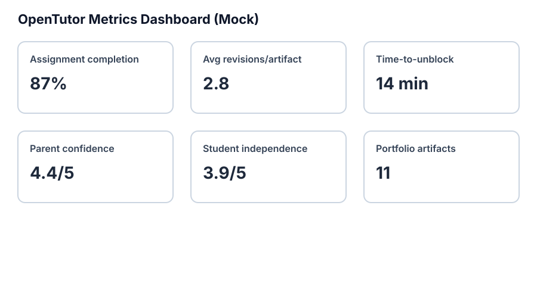

← Back to Main White Paper
Success Metrics
This page proposes how OpenTutor can be evaluated as an experimental, parent-supervised model.
Student Progress
- Assignment completion rate
- Subject mastery checks
- Student independence score
Learning Quality
- Number of revisions per artifact
- Student reflection quality
- Portfolio artifacts completed per semester
Parent Oversight
- Weekly parent review time saved
- Parent confidence score
Tutor Effectiveness
- Time-to-unblock when a student is stuck
- Tutor questions resolved without parent interruption
Portfolio Development
- Artifacts with revision history
- Artifacts approved for showcase
Dashboard Mockup
